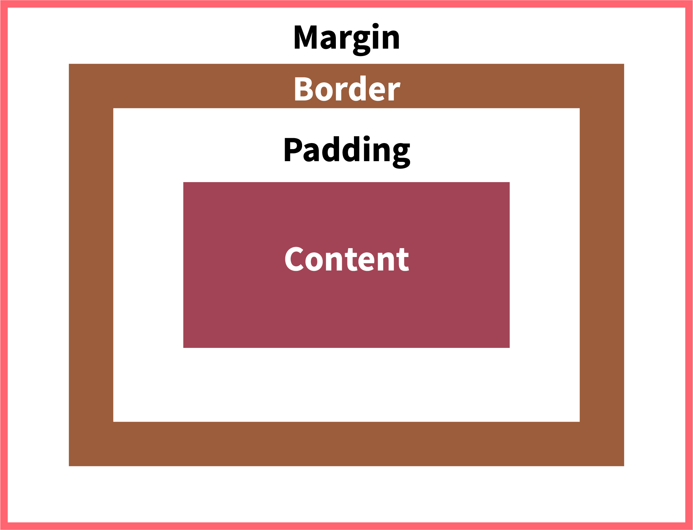

Structure, Phrasing and Display
There are two different types of structure elements: block and in-line elements. Block elements will expand to fit their container unless otherwise specified. Inline elements take up the space they need, meaning they do not seperate themsleves from the other pieces of content. In-line elements squeeze inbetween other pieces seemlessly.
Box Model
The Box Model refers to how all html elements are considered as boxes. This box is made of different parts. The content is surrounded by padding that is the amount of extra space between the content and the border of the box. Around the border is a margin that also clears the area around the box.
The box-sizing property allows the padding and border size to be included in the elements total width and height. This allows elements to appear the size you would think they would be without having to factor in the padding and borders extra size.

Background Images
Images that appear in the html document are considered their own element, and are treated like any other. Background images that are loaded through CSS appear behind elemtents instead of beside this. With this, backgound can look anyway you want if you are willing to create the necessary resources.
Unless otherwise specified, backgorund elements will appear at their original size and will be duplicate multiple times to take up the size of the content.